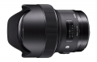
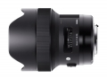

器材库 > 35mm画幅AF定焦镜头 > DG 14/1.8 HSM Art

详细规格
镜头类型
超广角镜头
发布日期
2017-02-21
焦距
14mm
最大光圈
f/1.8
最小光圈
f/16
视角（对角）
114.2°
镜头结构
16片/11组
低/超低色散镜片
7片
光圈叶片
9片
最近对焦距离
27cm
最大放大倍率
1:9.8
驱动马达
HSM（超声波马达）
镜头卡口
Canon EF, Nikon F, Sigma SA
防抖
否
颜色
黑色
尺寸
95.4×126mm
重量
1170g
附件
镜头包，罩式镜头盖
该产品暂无存档的网友点评
产品图 / 样片
DG 14/1.8 HSM Art

DG 14/1.8 HSM Art
评测 / 相关文章
- 详细内容 （存档）
- ［资讯］独一无二 适马14/1.8Art锐度测试 （存档）
- ［行情］星空神器到货 适马14/1.8国内预售 （存档）
- ［资讯］CP+2017独家报道 各家新货逐个品（下） （存档）